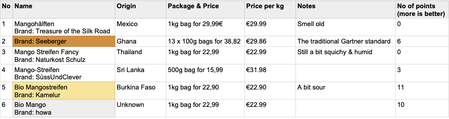

Test de la mangue séchée
Depuis nos 4 ans au Vietnam, nous adorons la mangue ! Et ici en Allemagne, nous nous sommes principalement tournés vers la mangue séchée - et nous consommons de la mangue fraîche lors d'occasions exceptionnelles...
Comme nous en mangeons beaucoup, j'ai décidé de faire un test : j'ai commandé 6 types différents de mangue séchée et nous les avons testés et classés par tous les membres de la famille et par des amis également.
Voici donc le résultat en bref :

Nos résultats de test
Le gagnant était : Kamelur 1kg BIO Mangue séchée, non sulfurée et non sucrée - mangue séchée sans ajout de sucre
Notez que lors de tests ultérieurs, tout le monde n'a pas autant apprécié les Kamelur Mangostreifen que nous : elles sont un peu acides, et ainsi un autre groupe d'amateurs de mangue s'est concentré sur les mangues howa :
Remarque : Tous les candidats mangue ont été commandés sur amazon, c'est donc également notre source de prix.
Amusez-vous bien avec les mangues, Till.